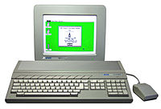

Década de 1980
A década de 80 foi marcada com o primeiro sistema operacional a base de janelas, o xerox stars 8010 onde pela primeira vez poderia ser executado simultaneamente vários programas.
Computadores na Década de 80:
Em 87 foi criado o sistema de imagem Video Graphics Array (VGA) criado pela pela empresa IMB como um sistema de saída de imagem, se futuramente.

Também foram desenvolvidos muitos computadores na década de 80 como:
Sinclair ZX81: que tendo seu valor de menos de 100 Dólares sendo assim popularizando os computadores domésticos.
BBC Micro: criado com o intuito educacional no Reino Unido.
Atari ST: Primeiro computador com interface Musical Instrument Digital Interface. (MIDI) É uma linguagem que permite que computadores, instrumentos musicais e outros hardwares se comuniquem.
Atari ST